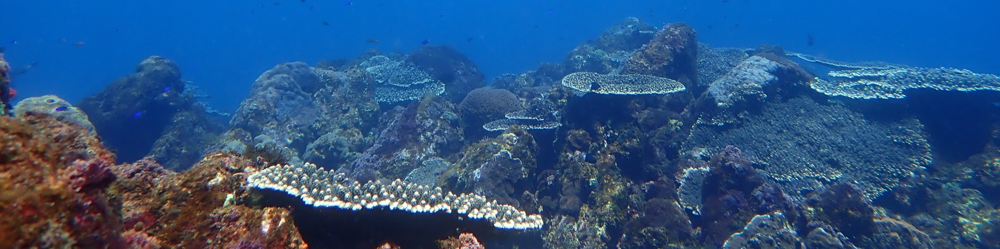

Joshua M. Heitzman
coral eco-physiology | coral disease dynamics | ecology
 I was previously a post-doctoral researcher at Arizona State University working on the dynamics of free radicals under heat stress. I received my PhD at the University of Tsukuba (Shimoda Marine Research Center), where I focused on how abiotic stressors (e.g. ocean acidification, ocean warming, etc.) affect the prevalence of biotic stressors (e.g. coral disease, turf algae, etc.), and their resulting interaction with hermatypic corals.
I was previously a post-doctoral researcher at Arizona State University working on the dynamics of free radicals under heat stress. I received my PhD at the University of Tsukuba (Shimoda Marine Research Center), where I focused on how abiotic stressors (e.g. ocean acidification, ocean warming, etc.) affect the prevalence of biotic stressors (e.g. coral disease, turf algae, etc.), and their resulting interaction with hermatypic corals.
Publications
Click on the images to access publications
Turf algal prevalence will increase in coral ecosystems under ocean acidification yet their contribution towards the ongoing and projected degradation of reefs is often overlooked. Turf algal settlement was induced on exposed coral skeleton adjacent to live coral tissue to investigate coral-turf algal interactions through a combination of laboratory and field transplantation (shallow volcanic CO2 seep) experiments across two temperature regimes. Here, we show that turf algae are competitively favored over corals under high pCO2 conditions. Turf algae-associated biological activity locally acidified the microenvironment overlying the exposed coral skeleton, leading to its bioerosion. Increases in coral-turf algal interactions could shift coral ecosystems towards net dissolution and should be integrated into global accretion models when considering future carbonate budgets under climate change.
Seasonal coral-algae interactions drive White Mat Syndrome coral disease outbreaks
Ocean warming drives not only the increase of known coral disease prevalence but facilitates the emergence of new undescribed ones too. As climate change is restructuring coral ecosystems, novel biological interactions could lead to an increase in coral disease in both tropical and marginal coral communities. White Mat Syndrome (WMS) represents one such emerging coral disease, with outbreaks associated with high algal interactions and seasonal summer temperatures. However, the mechanisms behind its pathogenesis, modes of transmission and causative pathogens remain to be identified. Ex situ infection experiments pairing the coral Porites heronensis together with local potential contributory factors show that the macroalga Gelidium elegans hosts and proliferates the WMS microbial mat. This pathogenic consortium then infects adjacent corals, leading to their mortality. WMS was also observed to transmit following the fragmentation of the microbial mat, which was able to infect healthy corals. Sulfur-cycling bacteria (i.e., Beggiatoa, Desulfobacter sp., Arcobacteraceae species) and the freeliving spirochete Oceanospirochaeta sediminicola were found consistently in both WMS and G. elegans consortia, suggesting they are putative pathogens of WMS. The predicted functional roles of these pathogenic consortia showed degradative processes, hinting that tissue lyses could drive mat formation and spread. Coral-algae interactions will rise due to ongoing ocean warming and coral ecosystem degradation, likely promoting the virulence and prevalence of algal-driven coral diseases.
Recurrent disease outbreak in a warm temperate marginal coral community
Coral diseases contribute to the rapid degradation of coral reefs on a global scale. Although widespread in tropical and subtropical reefs, disease outbreaks have not been described in warm temperate areas. Here, we report the outbreak of a new coral disease in a warm temperate marginal coral community in Japan. Outbreaks of the disease have been observed during the summer and autumn months since 2014. It affects the coral species Porites heronensis and was tentatively named "White Mat Syndrome" (WMS) as it consists of a white microbial mat dominated by Thiothrix sp., a sulfide oxidizing bacteria. Outbreaks followed high seasonal temperatures and were associated with the macroalga Gelidium elegans, which acts as a pathogen reservoir. With ocean warming and the anticipated increase in novel coral-algae interactions as some coral species shift poleward, WMS and emerging diseases could hinder the role of temperate areas as a future coral refuge.
List of publications
Agostini, S., Heitzman, J., Iijima, L., Mitushasi, G., Spatafora, D., Wada, S., Harvey, B.P., Kurihara, H., 2024. Turf algae drives coral bioerosion under high CO2 (preprint). In Review. https://doi.org/10.21203/rs.3.rs-3779657/v1
Agostini, S., Houlbrèque, F., Biscéré, T., Harvey, B.P., Heitzman, J.M., Takimoto, R., Yamazaki, W., Milazzo, M., Rodolfo-Metalpa, R., 2021. Greater Mitochondrial Energy Production Provides Resistance to Ocean Acidification in “Winning” Hermatypic Corals. Frontiers In Marine Science 7. https://doi.org/10.3389/fmars.2020.600836
Heitzman, J.M., Caputo, N., Yang, S.-Y., Harvey, B.P., Agostini, S., 2022. Recurrent disease outbreak in a warm temperate marginal coral community. Marine Pollution Bulletin 182, 113954. https://doi.org/10.1016/j.marpolbul.2022.113954
Heitzman, J.M., Mitushasi, G., Spatafora, D., Agostini, S., 2023. Seasonal coral-algae interactions drive White Mat Syndrome coral disease outbreaks. Science of The Total Environment 900, 166379. https://doi.org/10.1016/j.scitotenv.2023.166379
Research Methods and Experience
From the start of my undergraduate research to the end of my PhD, I conducted field monitoring (SCUBA) at least twice monthly, and am familiar with several field monitoring techniques. I have experience with assessing the physiology of corals and their symbiont to get calcification rates (buoyant weight, alkalinity anomaly), photosystem activity (dissolved oxygen, PAM), and other important physiological parameters (chl. content, protein content, zoox. density, etc.). I am also proficient with bacterial analysis (microbiome) from raw sample collection to analysis.
Data Analysis
I have mainly used R for all my statistical analysis and figure production. I also analyze bacteria data within R after piping it from QIIME2 or PICRUSt2. For photographs both in situ and ex situ, I use ImageJ for labelling and surface area measurements.
Curriculum Vitae (CV)
My current CV (Updated: November 2024) can be downloaded here CV